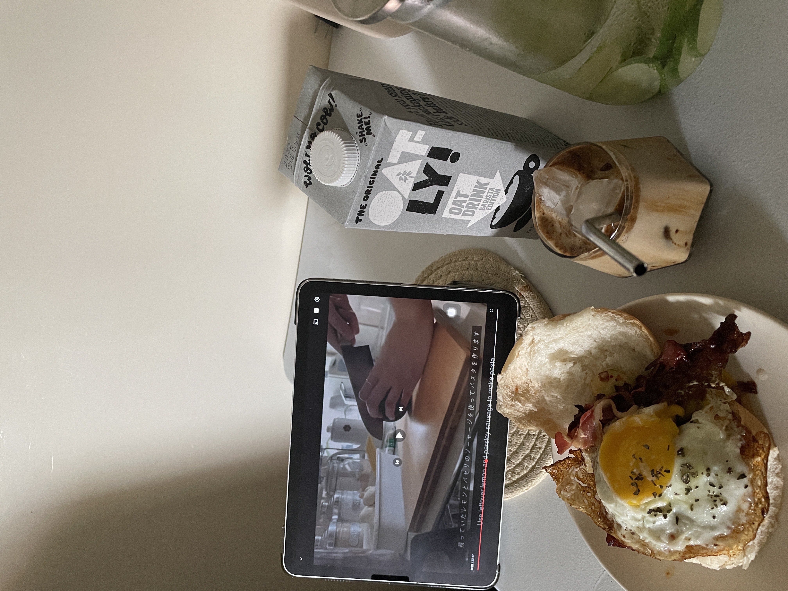
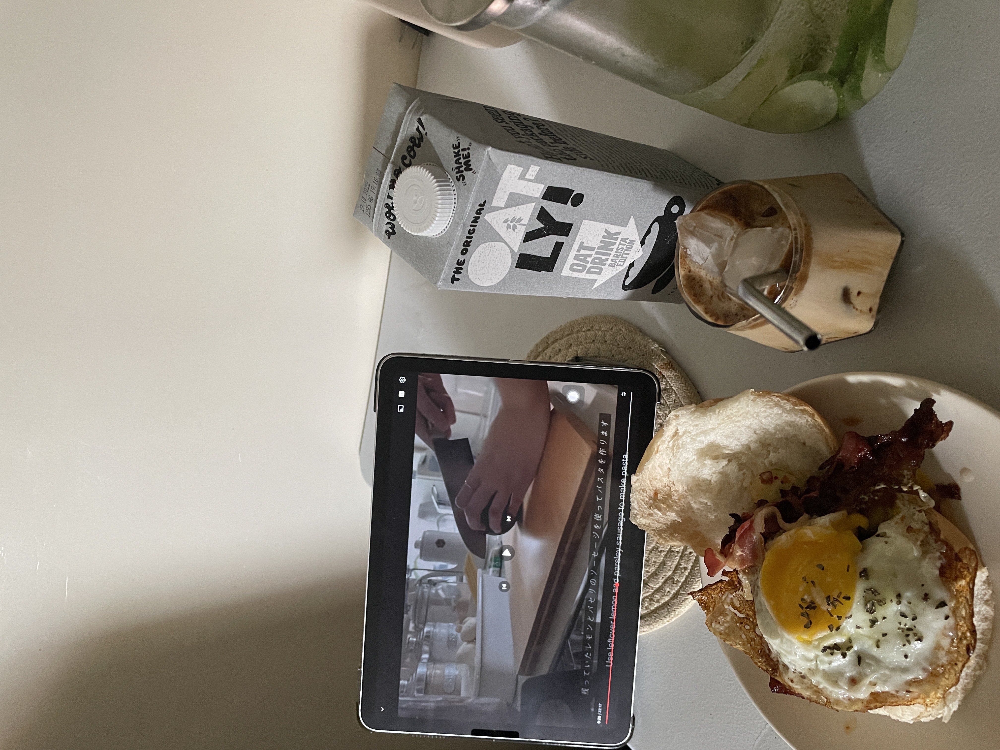
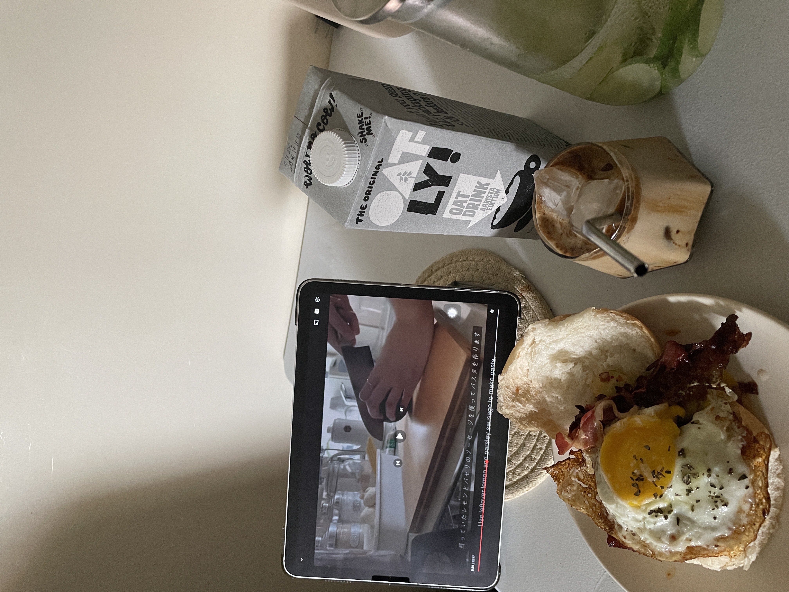
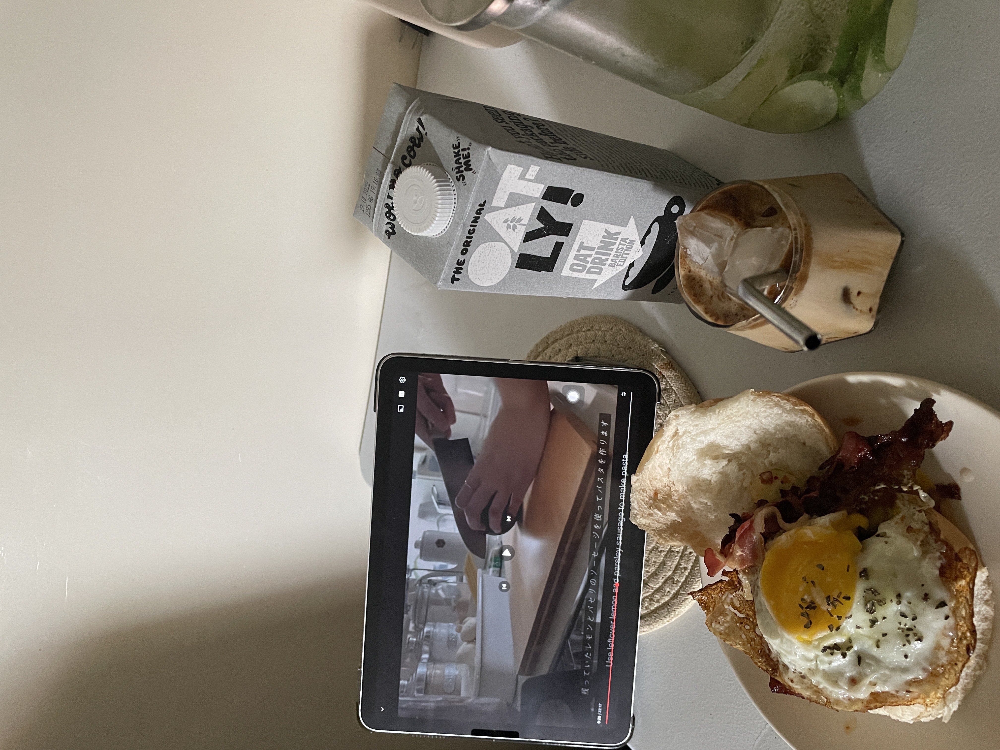

Cooking is a highly creative hobby to take up. You can create your own dishes, tweak well known recipes, blend your favourite cuisines, your creative juices will be in full flow. You can pick your own ingredients and do as you please, you can, mash, blend, boil, roast, dice, slice them, it's your choice.